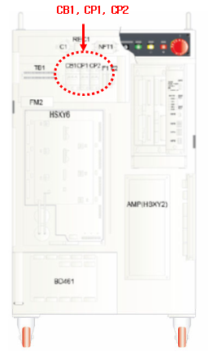
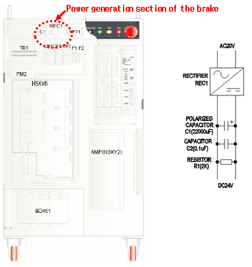

1.1.4.1. Outline
Motor temperature exceeded the normal value so the embedded temperature sensor was activated. If the error occurs without the motor temperature increase, there must be a problem with the input system.
1.1.4.2. Causes and checking methods
1. Check the circuit protector.
As circuit disconnection may occur, check if the circuit is disconnected on top of the controller and repair it if necessary.

2. Ignore the TS input signal.
Ignore the TS input signal, and check the input line. Refer to the Sequence Board section of the Maintenance Manual on how to ignore the TS input signal.
3. Check the voltage of the power generator of the brake section.
There may be a problem with the power generation section of the brake. The capacitor and rectifier are installed on top of the controller. A DC24V power is generated from the 20 V one. Check if the DC24V is generated by using a tester.

If the problem persists, take actions in the following order.
1) Replace the sequence board.
2) Replace the IO board.
3) Contact our office.